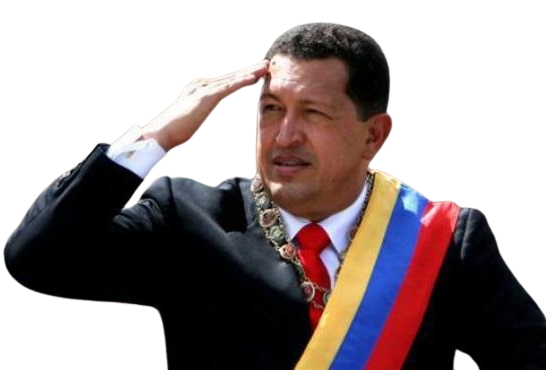

Plan de Desarrollo y Social de la Nación
Es una serie de programas de gobierno y leyes presentadas por presidentes actuales, incluye una versión estratégica de futuro ya que se pretende en ofrecer soluciones que se mantengan a tiempo. Sirve para tener una visión más amplia y estratégica para mantener el futuro del país.
Plan de la Patria 2007-2013
Aspectos Económicos: Lograr el crecimiento del sector Social, dentro de la economía e impulsar el desarrollo endógeno para satisfacer las necesidades de la población y también, la formación económica social indulgente a las misiones.
Aspectos Sociales: Superación de la ética del capital y se centra en la configuración de una economía revolucionaria. También la construcción de un estado ético, un estado de configuraciones honestas, eficientes que exhiban una conducta moral en sus condiciones de vida.
Aspectos Educativos: Extender la cobertura de la matrícula escolar a toda la población, garantizar la permanencia y prosecución en el sistema educativo.
Aspectos Tecnológicos: Fomentar el hábito de la lectura, el uso responsable del internet y otras formas de comunicación e información, también facilitar el acceso de las comunidades a los medios de comunicación y no solo eso también facilitar condiciones tecnológicas educativas y financieras a comunicaciones a los nuevos emprendedores.
Aspectos Geopolíticos: Mejorar la condición de habitad de los asentamientos humanos sean pequeños, medianos y gran escala y fortalecer las ciudades internas.
Plan de la Patria 2013-2019

Aspectos Económicos: Propulsar la transformación del sistema económico en función de la transición al socialismo bolivariano y transcendiendo el modelo rentista petrolero capitalista hacia modelos económicos. Contribuir al desarrollo del sistema económicos mediante la explotación de los recursos minerales con el uso de la tecnología de bajo impacto ambiental.
Aspectos Sociales: Consolidar la equidad de género con valores socialistas garantizando y respaldando los derechos de todos, consolidar las misiones grandes, misiones socialistas como instrumentos revolucionarios para el nuevo estado democrático.
Aspectos Educativos: Articular las políticas de educación, comunicación y cultura con la organización del poder popular para el crecimiento, valoración y reflexión sobre la identidad venezolana.
Aspectos Tecnológicos: En fortalecer y profundizar la soberanía tecnológica del sector hidrocarburo, también en apropiar y desarrollar la técnica y tecnología como clave de la eficiencia y proceso productivo. También en promover y estimular la investigación científica y el desarrollo tecnológico con el propósito de asegurar las operaciones modulares de las industrias petroleras.
Aspectos Geopolíticos: Reforzar u desarrollar el mecanismo de control que permita el estado ejercer eficazmente su soberanía.
Plan de la Patria 2019-2025
Aspectos Económicos: Sostener y actualizar mecanismos de ahorros e inversión popular sobre instrumentos financieros asociados a las actividades mineras y petroleras, también desarrollar el poderío económico con base en el aprovechamiento óptico de las potencialidades que ofrecen nuestros recursos mediante la construcción de un nuevo sistema productivo, logístico, lógica de precios y metabolismo capital.
Aspectos Sociales: Afirma la identidad, la soberanía y la conciencia histórica-cultural del pueblo para favorecer la descolonización del pensamiento y poder.
Aspectos Educativos: Articular las políticas de educación, comunicación y cultural con la organización del poder popular para el crecimiento, valoración y reflexión de la identidad venezolana.
Aspectos Tecnológicos: Consiste en brindar acompañamiento científico y tecnológico a los diversos sectores agroalimentarios para el provecho efectivo de las potencialidades y capacidades nacionales, también garantizar la aplicación de las mejores técnicas y procesos de producción.
Aspectos Geopolíticos: Aprovechar las ventajas de localización de nuestro país a escala continental y la construcción de una nueva geopolítica nacional empleando como elementos estructurales la racionalización sistemática geo-histórica y funcional, movilidad en el desarrollo de la dimensión espacial del socialismo.